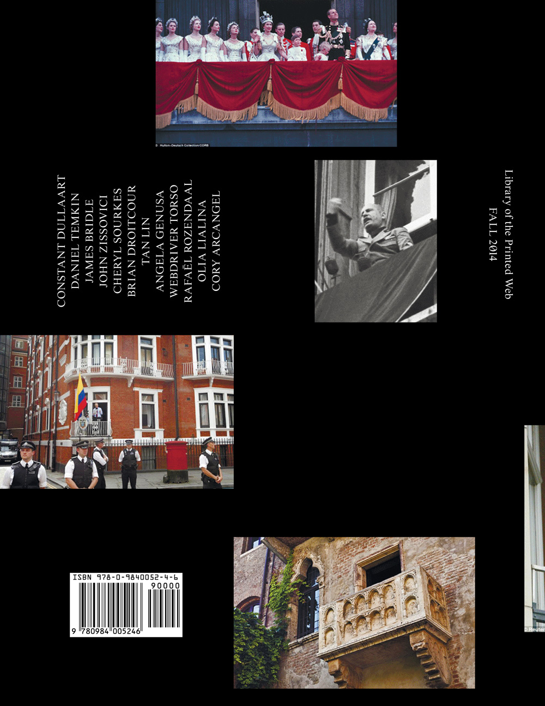
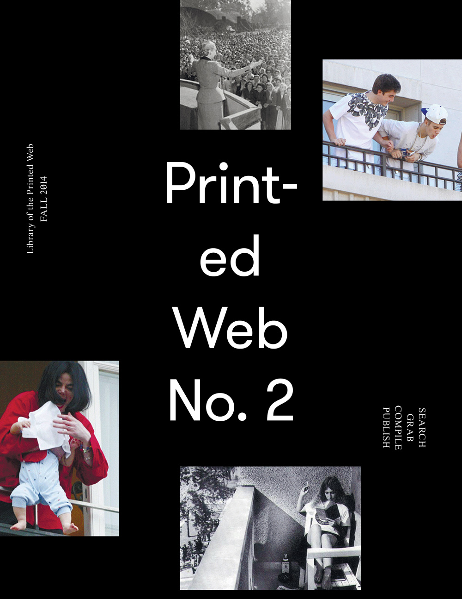
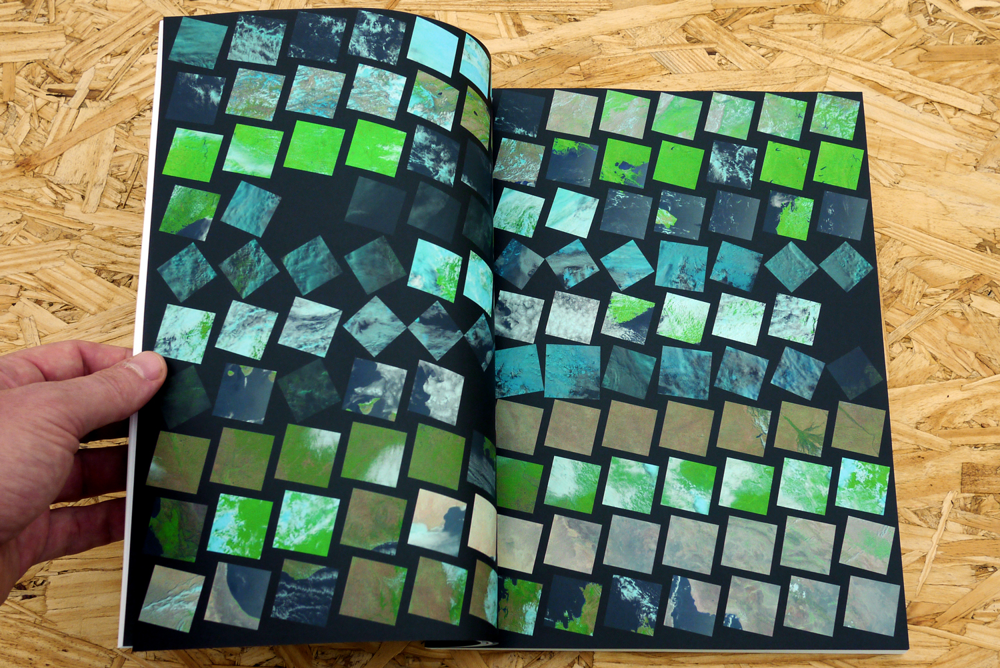
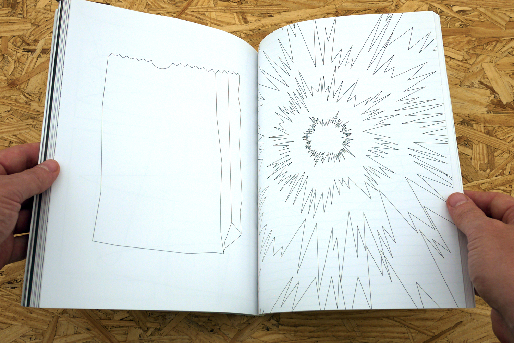
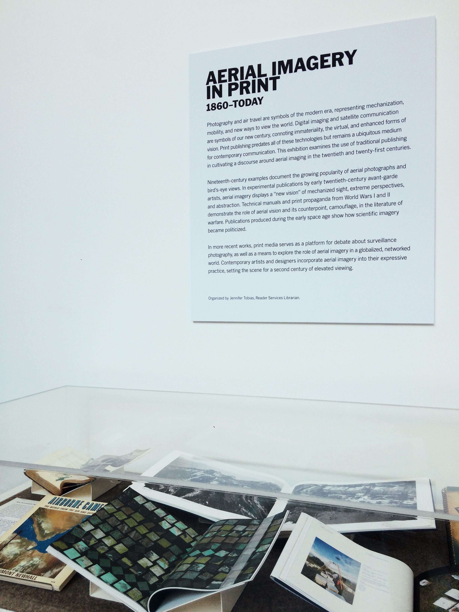

Printed Web 2 (2014)


180 pages
8.5 in x 11 in.
Full color printing, matte laminated cover
Print-on-demand (open edition)
Published by Paul Soulellis, Library of the Printed Web
ISBN 978-0-9840052-4-6

Contributors—Constant Dullaart, Daniel Temkin, James Bridle, John Zissovici, Cheryl Sourkes, Brian Droitcour, Tan Lin, Angela Genusa, Webdriver Torso, Rafaël Rozendaal, Olia Lialina, Cory Arcangel

Download PDF

Printed Web 2 in the exhibition “Aerial Imagery in Print, 1860–Today” at The Museum of Modern Art, NYC